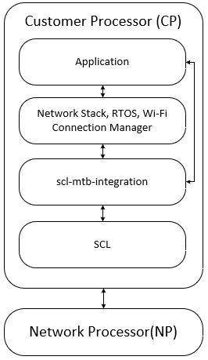

|
SCL MTB Integration
|
SCL MTB Integration is a library which translates Wi-Fi Host Driver (WHD) APIs to Subsystems Communication Layer (SCL) APIs. Applications using WHD can use SCL with the help of SCL MTB Integration. The library APIs are thread-safe.
Features and Functionality
The current implementation has the following features and functionality:
- STA mode. AP and connecurrent AP+STA modes are not supported
- lwIP network stack, FreeRTOS and Wi-Fi Connection Manager to join and communication with a network
The following APIs are supported
Folder Structure
- /inc - contains WHD API Files
- /src - contains WHD to SCL translation API files
- /docs - contains documentation
SCL MTB Integration Architecture

Supported Platforms
This library and its features are supported on the following Cypress platforms:
- CYSBSYSKIT-01 Rapid IoT Connect Platform RP01 Feather Kit
Dependent Libraries
uint32_t whd_wifi_leave(whd_interface_t ifp)
Disassociates from a Wi-Fi network.
uint32_t whd_wifi_is_ready_to_transceive(whd_interface_t ifp)
Determines if a particular interface is ready to transceive ethernet packets.
uint32_t whd_wifi_register_multicast_address(whd_interface_t ifp, const whd_mac_t *mac)
Registers interest in a multicast address.
uint32_t whd_wifi_set_ioctl_value(whd_interface_t ifp, uint32_t ioctl, uint32_t value)
Sends an IOCTL command - CDC_SET IOCTL value.
uint32_t whd_wifi_get_bss_info(whd_interface_t ifp, wl_bss_info_t *bi)
Retrives the bss info.
cy_rslt_t cybsp_wifi_init_primary(whd_interface_t *interface)
Initializes the primary interface for the WiFi driver on the board.
uint32_t whd_wifi_on(whd_driver_t whd_driver, whd_interface_t *ifpp)
Turn on the Wi-Fi device.
uint32_t whd_wifi_scan(whd_interface_t ifp, whd_scan_type_t scan_type, whd_bss_type_t bss_type, const whd_ssid_t *optional_ssid, const whd_mac_t *optional_mac, const uint16_t *optional_channel_list, const whd_scan_extended_params_t *optional_extended_params, whd_scan_result_callback_t callback, whd_scan_result_t *result_ptr, void *user_data)
Initiates a scan to search for 802.11 networks.
uint32_t whd_wifi_deregister_event_handler(whd_interface_t ifp, uint16_t event_index)
Delete/Deregister the event entry where callback is registered.
void whd_network_send_ethernet_data(whd_interface_t ifp, whd_buffer_t buffer)
To send an ethernet frame to WHD (called by the Network Stack)
whd_result_t whd_management_set_event_handler(whd_interface_t ifp, const whd_event_num_t *event_nums, whd_event_handler_t handler_func, void *handler_user_data, uint16_t *event_index)
Registers a handler to receive event callbacks.
uint32_t whd_wifi_get_mac_address(whd_interface_t ifp, whd_mac_t *mac)
Retrieves the current Media Access Control (MAC) address (or Ethernet hardware address) of the 802....
uint32_t whd_wifi_join(whd_interface_t ifp, const whd_ssid_t *ssid, whd_security_t auth_type, const uint8_t *security_key, uint8_t key_length)
Joins a Wi-Fi network.